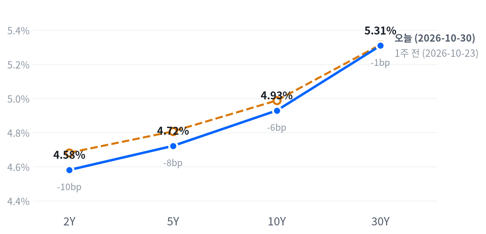

인텔이 4분기 가이던스를 예상보다 낮게 내놓고 아마존이 현금흐름 악화를 드러내자 반도체·저장장치·광통신·장비주가 일제히 급락했다. 하이퍼스케일러는 지출을 줄이지 않는데 그 지출을 받는 공급망이 더 크게 밀려, AI 지출의 수익성 의문이 공급망 밸류에이션에 먼저 실렸다고 본다.
연준 인사들이 추가 인상을 말했는데도 2년물 금리는 2거래일 연속 내렸다. 이 하락이 주식 매도가 만든 안전자산 수요인지는 11월 5일 종가까지 주식과 2년물이 같은 방향으로 움직이는지로 확인한다.
인텔의 4분기 가이던스와 아마존의 현금흐름 악화가 겹치자 AI 공급망 전반에 매도가 쏟아졌다. 인텔은 4분기 매출 전망을 예상보다 낮게 내놓고 PC 침체가 내년까지 이어진다고 경고해 28.58% 급락했고, 반도체·저장장치·광통신·장비주가 함께 밀리며 나스닥은 2.86% 내렸다. 연준 인사 세 명이 긴축을 더 해야 한다고 말한 날인데도 국채 금리는 단기물부터 내렸다.
우리는 이 매도를 AI 수요가 꺾였다는 신호보다, 그 지출이 수익을 낼지에 대한 의문이 공급망의 높은 밸류에이션에 먼저 실린 재평가로 본다. 아마존은 2027년 설비투자를 의미 있게 더 늘린다고 밝혀 발주가 줄어든다는 신호는 없었는데, 발주를 받는 반도체·광통신이 발주하는 쪽보다 크게 밀렸기 때문이다(알파벳·메타가 속한 커뮤니케이션서비스 -1.29%). 가장 강한 반론은 인텔의 PC·공장 문제, 샌디스크의 이익률 정점 우려, 마벨의 루멘텀 인수 협상 보도라는 고유 재료 세 개가 하루에 겹쳤다는 설명이다. 공급망 이익 전망을 시장이 얼마나 낮췄는지 잰 자료는 없어, 시장 기대와 우리 해석의 차이는 아직 알 수 없다.
3개월 시계에서 이 해석은 반도체·AI 하드웨어 업종의 상대수익률에 부담이고, 방어 업종과 에너지의 상대 강세를 뒷받침한다. 측정된 기대가 없고 두 설명을 구분할 자료가 다음 주에 몰려 있어 새 아이디어로 내지 않고 판단을 보류한다. 11월 3일 AMD 실적과 11월 4일 코히런트 실적에서 데이터센터 가이던스가 강한데도 공급망이 S&P 대비 회복하지 못하면 밸류에이션 재평가 해석을 뒷받침하고, 곧바로 회복하면 고유 재료가 겹친 하루라는 설명을 우선으로 본다. 공급망과 하이퍼스케일러 사이의 상대 거래는 두 실적이 몰린 주에 이벤트 변동성이 크고, 옵션·차입 비용 자료가 없어 실행 비용을 따질 수 없다. 금리 쪽에서는 2년물이 주식 급락과 함께 내려 미국 단기채가 주식 손실을 일부 완충하는 날이 2거래일 이어졌다.
2년물 하락은 성장 기대 하향보다 주식 매도가 만든 안전자산 수요가 주도했다고 판단한다. 확인 기준은 10월 30일 종가 대비 11월 5일 종가의 S&P 누적 등락률과 2년물 누적 변화다. 두 값의 절댓값이 각각 0.85%와 5.7bp 이상이고 부호가 같으면 이 판단을 뒷받침하고, 부호가 반대이면 판단은 약해지고, 성장 기대가 낮아져 정책금리 경로가 조정됐다는 설명을 우선으로 본다. 어느 한쪽이 기준에 못 미치면 결론을 내지 않는다. 그 사이 11월 2일 ISM 제조업과 11월 3일 중간선거가 두 값을 함께 움직일 수 있다.
| 지수 | 종가 | 등락 | 기준일 |
|---|---|---|---|
| 닛케이225 | 64,659.47 | +1.10% | 10월 29일 |
| 항셍 | 22,958.65 | -0.59% | 10월 29일 |
| 상해종합 | 3,651.43 | -0.82% | 10월 29일 |
| DAX | 25,818.21 | -0.85% | 10월 30일 |
| FTSE100 | 10,729.78 | +0.07% | 10월 30일 |
| 유로스톡스50 | 6,131.31 | -1.22% | 10월 30일 |
| VIX | 19.42 | +2.22p | 10월 30일 |
아시아 세 지수는 들어온 마지막 종가인 10월 29일 값이고, 유럽 세 지수와 VIX는 10월 30일 값이다. VIX 등락은 포인트다.
미국은 유럽의 약세를 이어받았다. 유럽은 10월 30일 유로스톡스50이 1.22%, DAX가 0.85% 내렸고 FTSE100만 보합권에서 버텼다. 아시아는 10월 29일 종가로 닛케이가 올랐지만 항셍·상해종합은 내려 지역 안에서도 갈렸다. 10월 30일 서울에서는 AI 지출 의문에 SK하이닉스가 7.08% 내리는 등 코스피가 3.5% 급락했다는 보도가 나왔다.
지수의 낙폭 대부분은 개장 전에 생겼다. 인텔·아마존 실적이 전날 장 마감 뒤 나오자 나스닥 선물(NQ)은 16:00(ET) 29,593에서 밀려 09:00(ET) 28,756까지 내렸고, S&P 선물(ES)은 07:30(ET) 7,664가 저점이었다. 현물은 S&P -1.16%, 나스닥 -2.22%, 러셀2000 -0.72%의 갭으로 내려 출발했다.
평균적인 종목은 지수보다 덜 내렸다. S&P 동일가중 지수가 시총가중 지수보다 0.99%p 앞서, 이날 하락은 소수가 끌어내림으로 요약된다. 대형 기술주 몇 종목이 지수를 끌어내렸다. 세 지수는 모두 하루 범위의 중간쯤에서 끝났다.
저점권·고점권 경계는 최근 2,259거래일의 일간 종가 위치 이력으로 다시 잰 기준이다.
인텔·아마존 실적이 AI 공급망을 끌어내렸고, 그 매도가 방어 업종과 국채로 자금을 옮겼다. 기술이 4.89% 내린 반면 에너지·필수소비재·유틸리티·헬스케어를 포함한 여섯 업종은 올랐고, S&P 성장주(-2.66%)가 가치주(-0.76%)보다 훨씬 크게 내렸다. S&P와 나스닥은 10월을 하락으로 마쳤고 다우는 월간 상승을 지켰다는 보도가 나왔다.
출처: Korea JoongAng Daily, Reuters
| 지수 | 종가 | 등락률 |
|---|---|---|
| S&P500 가치주 | 239.53 | -0.76% |
| 다우존스 | 51,770.31 | -1.09% |
| 러셀2000 | 2,811.84 | -1.66% |
| S&P500 | 7,580.07 | -1.82% |
| S&P500 성장주 | 134.46 | -2.66% |
| 나스닥 | 25,437.00 | -2.86% |
| 섹터 | 등락률 |
|---|---|
| 에너지 | +1.91% |
| 필수소비재 | +1.41% |
| 유틸리티 | +0.67% |
| 헬스케어 | +0.45% |
| 소재 | +0.40% |
| 부동산 | +0.26% |
| 경기소비재 | -0.71% |
| 금융 | -0.76% |
| 커뮤니케이션서비스 | -1.29% |
| 산업재 | -1.60% |
| 기술 | -4.89% |
인텔발 AI 공급망 매도에 S&P500은 1.82% 내린 7,580, 나스닥은 25,437로 끝나 두 지수 모두 6월 이후 가장 큰 하루 낙폭을 냈다는 보도가 나왔다. 나스닥은 10월 6일 사상 최고 종가보다 7.8% 낮다. 다우는 1.09% 내린 51,770, 러셀2000은 1.66% 내린 2,812다.
하루 움직임은 평소 하루 변화폭 대비 S&P500 3.06배, 나스닥 3.01배, 러셀2000 2.01배였다. VIX 상승폭은 평소의 2.12배였다.
하락을 만든 것은 인텔·아마존 실적이 되살린 AI 지출의 수익성 의문이다. 인텔은 3분기 조정 EPS가 0.52달러로 예상(약 0.40달러)을 넘었다. 그러나 4분기 매출 가이던스는 150억~160억 달러(예상 약 170.5억 달러), 조정 EPS는 0.25달러(예상 0.43달러)로 낮았다. 립부 탄 CEO는 메모리 부족과 가격 상승 탓에 PC 출하가 2026년 12%, 2027년 10% 줄 것으로 내다봤다. 아마존은 3분기 설비투자가 773억 달러로 예상(587억 달러)을 크게 넘었고 최근 12개월 잉여현금흐름이 -424억 달러로 돌아섰다. 기술주 시가총액이 하루에 1조 달러 넘게 사라졌다는 보도가 나왔고, VIX는 2.22p 올라 19.42가 됐다.
장중에는 매도가 오후까지 깊어졌다. S&P는 개장 직후가 그날 고점이었고 14:30(ET) 무렵 7,528까지 밀렸으며, 나스닥 100이 장중 한때 고점 대비 10% 넘게 빠져 조정 영역에 들어갔다는 보도가 나왔다. 저점 뒤 마감까지 S&P는 약 0.7% 되올라 하루 범위 중간에서 끝났지만, 이 되돌림을 설명하는 재료는 확인되지 않았다.
지수 하락은 기술 한 업종이 거의 다 만들었다. 추정 기여도로 기술이 -1.64%p를 깎았고 커뮤니케이션서비스 -0.17%p, 산업재 -0.10%p가 뒤를 이었다. 에너지가 +0.05%p, 헬스케어와 필수소비재가 각각 +0.04%p를 보탰고, 업종 합으로 설명되지 않는 부분은 +0.11%p다.
추정 기여도는 업종 비중을 직접 받지 않아, 최근 252거래일 지수·업종 수익률로 추정한 비중을 곱한 값이다. 소재와 부동산은 비중을 추정할 수 없어 빠졌다.
하락은 깊었지만 넓지는 않았다. 11개 업종 가운데 여섯이 올랐고 평균 종목은 지수보다 덜 내렸다. 그렇다고 소형주로 자금이 옮겨 간 날도 아니다. 러셀2000도 크게 내려, 전날의 소형주 강세는 이어지지 않고 넓은 위험회피 안에서 덜 내린 데 그쳤다. 최근 60거래일 주식과 금리는 거의 따로 움직여, 이날 국채 금리 하락이 주가를 받치는 힘은 약했다.
출처: Reuters, Intel, CNBC, Techloy, NBC News, Yahoo Finance, Newsquawk
| 만기 | 종가(10월 30일) | 전일比(bp) | 1주 전(10월 23일) | 주간 변화(bp) |
|---|---|---|---|---|
| 2Y | 4.581% | -7.5 | 4.682% | -10.1 |
| 5Y | 4.722% | -8.0 | 4.807% | -8.5 |
| 10Y | 4.929% | -6.0 | 4.988% | -5.9 |
| 30Y | 5.309% | -2.0 | 5.315% | -0.6 |
주식 매도가 국채로 옮겨 가며 단기물이 금리 하락을 이끌었다. 2년물은 7.5bp 내린 4.581%, 5년물은 8.0bp 내린 4.722%다. 10년물은 6.0bp 내린 4.929%로 5% 아래에 머물렀다. 30년물은 2.0bp 내리는 데 그쳐 5.309%다. 10년물은 그래도 최근 2년(504거래일) 가운데 이보다 높았던 날이 36일뿐인 고점권에 있다.

네이버 국채 종가, 전 만기 10월 30일 기준. 1주 전(10월 23일)보다 2년물 10.1bp, 10년물 5.9bp, 30년물 0.6bp 내려 만기가 짧을수록 더 내렸다. 10년물 하루 변화는 평소 하루 변화폭의 1.2배였다.
하루로도 한 주로도 단기물이 더 내린 불 스티프닝이다. 2s10s는 34.8bp, 5s30s는 58.7bp로 넓어졌다. FOMC 당일 장기물이 오르며 시작된 스티프닝을 이후 2거래일 동안 단기물 하락이 이어받았다.
연준 인사들의 매파 발언에도 단기물이 내린 것은 주식 매도가 만든 안전자산 수요 때문이라고 본다. 로건 댈러스 연은 총재는 최소 두 차례 25bp 추가 인상이 필요하다고, 무살렘 세인트루이스 연은 총재는 추가 인상이 곧 필요하다고 말했다. 발언 뒤에도 CME FedWatch 기준 12월 인상 확률은 약 76%로, 전날 보도된 80% 안팎에서 조금 낮아지는 데 그쳤다는 보도가 나왔다. 반론은 성장 기대 하향이다. 10월 시카고 PMI는 55.3으로 예상(56.0~56.1)과 전월(58.8)을 밑돌았다.
10년물 하락의 내역은 10월 29일 것까지만 나눌 수 있다. 그날 10년물 7bp 하락은 실질금리 4bp와 기대인플레 3bp가 함께 만들었다. 10월 30일 10년 기대인플레는 1bp 내린 2.34%로 거의 움직이지 않아, 이날 하락에서는 실질금리 몫이 더 컸을 여지가 있다. 이날 실질금리가 게시되면 그 몫이 확정된다.
신용시장은 주식 급락 전까지 조용했다. 하이일드 스프레드는 10월 29일 3.26%로 하루 12bp 넓어졌지만 5거래일로는 14bp 좁아졌다. 이날의 주식 급락은 아직 이 값에 들어 있지 않다.
5년 뒤 5년 명목금리 5.18%, 실질 2.95%(10월 29일 기준). 기대인플레 쪽 수치와의 교차검증은 할 수 없었고, 위험 프리미엄이 섞인 값이다.
출처: Yahoo Finance, CNBC, investingLive, Newsquawk
| 통화쌍 | 종가 | 등락률 | 기준일 |
|---|---|---|---|
| DXY | 101.894 | -0.14% | 10월 30일 |
| USD/KRW | 1,332.30 | -0.49% | 10월 30일 |
| USD/JPY | 157.517 | -0.28% | 10월 30일 |
| EUR/USD | 1.1171 | +0.04% | 10월 30일 |
주식이 급락한 날에도 달러는 안전자산으로 사들여지지 않았다. 달러지수는 0.14% 내린 101.894로 거의 움직이지 않았고, 엔/달러는 0.28% 내린 157.517엔이다. 원/달러는 0.49% 내린 1,332원으로, 최근 2년(504거래일) 가운데 이보다 낮았던 날이 7일뿐인 원화 강세권에 있다.
달러가 오르지 않은 것은 위험회피 수요가 달러보다 미국 단기 국채로 향했고, 그 결과 단기 금리가 내려 달러의 금리 우위가 줄었기 때문이라고 본다. 평소 주식과 달러는 느슨하게 반대로 움직여 왔는데, 이날은 주식 급락에도 달러가 따라 오르지 않았다. 엔은 주식 매도 속에 소폭 강해져 위험회피 통화 역할을 일부 했다. 유럽 금리 자료가 없어 유로 쪽 상대금리가 얼마나 바뀌었는지는 판단하지 못한다.
환율은 뉴욕 16:00 ET 가격, 전 거래일 같은 시각 대비다.
| 품목 | 종가 | 등락률 |
|---|---|---|
| WTI | $103.14 | +0.37% |
| Brent | $112.55 | +0.89% |
| 천연가스 | $2.886 | -1.23% |
| 금 | $3,892.80 | -3.51% |
금이 4,000달러 아래로 밀렸다. 금은 3.51% 내린 3,893달러로 7월 이후 처음 4,000달러를 밑돌았다는 보도가 나왔고, 하루 낙폭은 평소의 세 배에 가까웠다. 유가는 높은 자리를 지켰다. WTI는 0.37% 오른 103.14달러로 최근 2년(504거래일) 가운데 이보다 높았던 날이 12일뿐이다.
금 하루 변화는 평소 하루 변화폭의 2.87배였다.
금 급락의 원인은 확인되지 않았다. 금은 밤사이 4,021달러 고점에서 미끄러져 주식이 저점을 지난 뒤인 15:30(ET) 무렵 3,879달러까지 밀렸고, 그 부근에서 마감해 매도 압력이 끝까지 이어졌다. 보도는 뜨거운 PCE 뒤 연말 전 추가 인상 기대를 원인으로 들었지만, 같은 날 국채 금리와 달러가 함께 내려 그 설명은 가격과 맞지 않는다. 최근 60거래일 금과 금리는 거의 따로 움직였다. 은도 3.09% 내렸다.
유가는 호르무즈 해협 유조선 피격으로 장중 1.7% 넘게 올랐다가 상승폭 대부분을 반납했다. 소형 보트가 붙인 폭발물에 유조선이 맞았다는 보도와, 트럼프 대통령이 11월 3일 중간선거 뒤 이란 타격 옵션을 보고받았다는 보도가 나왔다. 10월 한 달 호르무즈에서 피격된 선박이 최소 30척으로 9월의 두 배였다는 보도도 나왔다. 브렌트와 WTI의 가격 차는 9.41달러로 넓어졌는데, 표의 WTI는 12월물, 브렌트는 1월물이라 가격 차에는 만기 차이가 들어 있다. 천연가스는 1.23% 내렸다.
최근 60거래일 동안 열 개 자산의 움직임에서 가장 큰 공통 요인은 전체의 41.5%를 설명하고, 이 요인은 주식이 이끈다. 이 요인과 함께 움직이는 자산군은 직전 구간의 금리가 아니라 원자재다.
원자재·환율은 뉴욕 16:00 ET 가격, 전 거래일 같은 시각 대비다. 결제가와 다를 수 있다.
출처: FXStreet, Investing.com, Kitco, EnergyNow, CNBC
미국 경기 국면은 성장 보합·물가 교착인 교착을 10월 14일부터 13영업일째 유지한다. 이날 새로 나온 경제지표가 없어 성장 점수 0.009와 물가 점수 0.003이 그대로이고, 국면은 움직일 수 없다. 10월 시카고 PMI가 예상을 밑돌았지만 국면 판정에 쓰는 지표가 아니다. 11월 6일 10월 고용에서 고용과 임금이 크게 움직여야 성장 좌표를 다시 볼 수 있다.
네 축의 판정은 전일과 같다. 고용축 +0.157 · 생산·활동축 -0.379 · 소비축 +0.249 · 물가축 +0.003
| 지표 | Actual | Forecast | Previous | 발표일 | 컨센 대비 | 직전 대비 | 추세 |
|---|---|---|---|---|---|---|---|
| 구인건수(8월) | 7,079K | — | 7,335K | 2026-08 기준월 | 악화 | 악화(미미) · 3개월 평균 7,336K → 7,199K | |
| 신규 실업수당 청구 | 194,000 | — | 195,000 | 2026-10-29 (10월 24일 주간) | 개선 | 개선(미미) · 4주 평균 200K → 197K | |
| 신규 청구 4주 평균 | 196,750 | — | 198,000 | 2026-10-29 (10월 24일 주간) | 개선 | 개선(완만) · 4주 평균 203K → 198K | |
| 계속 실업수당 청구 | 1,701,000 | — | 1,722,000 | 2026-10-29 (10월 17일 주간) | 개선 | 개선(완만) · 4주 평균 1,723K → 1,710K | |
| 비농업 고용 변화(9월) | +29K | — | +133K | 2026-09 기준월 | 악화 | 악화(미미) · 3개월 평균 +81K → +51K | |
| 실업률(9월) | 4.2% | — | 4.1% | 2026-09 기준월 | 악화 | 개선(미미) · 3개월 평균 4.27% → 4.13% | |
| 평균시간당임금 MoM(9월) | +0.13% | — | +0.32% | 2026-09 기준월 | 악화 | 악화(미미) · 3개월 평균 +0.21% → +0.19% |
| 지표 | Actual | Forecast | Previous | 발표일 | 컨센 대비 | 직전 대비 | 추세 |
|---|---|---|---|---|---|---|---|
| 산업생산 MoM(9월) | +0.66% | — | +0.06% | 2026-09 기준월 | 개선 | 보합 · 3개월 평균 +0.40% → +0.32% | |
| 내구재주문 MoM(9월) | +1.84% | — | +0.12% | 2026-10-27 (9월분) | 개선 | 악화(미미) · 3개월 평균 +1.70% → +0.95% | |
| 신규주택판매(9월) | 676K | — | 680K | 2026-10-27 (9월분) | 악화 | 개선(미미) · 3개월 평균 652K → 668K | |
| 기존주택판매(9월) | 399만 | — | 393만 | 2026-09 기준월 | 개선 | 악화(뚜렷) · 3개월 평균 4,120K → 3,993K | |
| 실질GDP QoQ 연율(3분기 속보) | +3.4% | 3.0~3.2% | +2.2% | 2026-10-29 (3분기) | 상회▲ | 개선 | — |
| S&P Global 종합 PMI(10월 속보) | 57.6 | — | 58.4 | 2026-10-23 | — | — | |
| S&P Global 제조업 PMI(10월 속보) | 56.0 | 55.5 | 55.9 | 2026-10-23 | 상회▲ | — | — |
| S&P Global 서비스업 PMI(10월 속보) | 57.9 | 58.0 | 58.8 | 2026-10-23 | 하회▼ | — | — |
| 시카고 PMI(10월) | 55.3 | 56.0~56.1 | 58.8 | 2026-10-30 | 하회▼ | — | — |
| 지표 | Actual | Forecast | Previous | 발표일 | 컨센 대비 | 직전 대비 | 추세 |
|---|---|---|---|---|---|---|---|
| 소매판매 MoM(9월) | +0.77% | — | +1.29% | 2026-09 기준월 | 악화 | 보합 · 3개월 평균 +0.61% → +0.55% | |
| 미시간대 소비자심리(9월 확정) | 48.1 | — | 51.7 | 2026-09 기준월 | 악화 | 개선(완만) · 3개월 평균 48.0 → 51.7 |
| 지표 | Actual | Forecast | Previous | 발표일 | 컨센 대비 | 직전 대비 | 추세 |
|---|---|---|---|---|---|---|---|
| CPI YoY(9월) | 3.72% | — | 3.35% | 2026-09 기준월 | 상승 | 둔화(미미) · 3개월 평균 3.80% → 3.46% | |
| CPI MoM(9월) | +0.65% | — | +0.40% | 2026-09 기준월 | 상승 | 재가속(완만) · 3개월 평균 +0.23% → +0.37% | |
| Core CPI YoY(9월) | 2.57% | — | 2.45% | 2026-09 기준월 | 상승 | 둔화(미미) · 3개월 평균 2.71% → 2.49% | |
| Core CPI MoM(9월) | +0.33% | — | +0.29% | 2026-09 기준월 | 상승 | 재가속(완만) · 3개월 평균 +0.19% → +0.28% | |
| PPI 최종수요 MoM(9월) | +1.34% | — | +0.47% | 2026-09 기준월 | 상승 | 재가속(완만) · 3개월 평균 +0.49% → +0.66% | |
| PCE 물가 YoY(9월) | 3.65% | — | 3.44% | 2026-10-29 (9월분) | 상승 | 교착 · 3개월 평균 3.62% → 3.49% | |
| Core PCE YoY(9월) | 3.12% | 3.1% | 3.03% | 2026-10-29 (9월분) | 부합= | 상승 | 교착 · 3개월 평균 3.10% → 3.05% |
| 미시간대 1년 기대인플레(9월 확정) | 4.6% | — | 4.0% | 2026-09 기준월 | 상승 | 둔화(완만) · 3개월 평균 4.70% → 4.27% |
직전 대비는 Actual을 Previous와 비교한 것이고, 추세는 최근 3개월 평균을 그 앞 3개월 평균과 비교한 것입니다(주간 실업수당 청구는 4주 평균끼리). 추세의 세기는 그 지표가 평소 움직이는 폭에 견준 크기이고, 작은 변화는 보합으로 봅니다. 분기 지표인 GDP는 두 비교가 같은 숫자를 보므로 직전 대비만 싣습니다.
연준의 다음 금리 변경은 12월 9일 FOMC의 추가 25bp 인상이라는 판단을 유지한다. 로건·무살렘 발언 뒤 CME FedWatch 기준 12월 인상 확률이 약 76%였다는 보도가 나왔고, 머니마켓 기준으로는 약 75%였다. 전날 보도치와 비교한 하루 변화는 15%p에 못 미치고 여전히 과반이라 시점은 12월에 둔다.
12월 9일 FOMC 전까지 연준 성명이나 의장 발언이 추가 인상 여지를 닫으면 12월 인상 중심 판단을 수정한다. 11월 6일 10월 고용에서 실업률이 3월 이후 범위(4.1~4.3%) 위로 올라서면 인상 우위 판단을 철회한다.
자산별 전달 방향은 전일과 같다. AI 캐펙스 사이클은 매크로 국면과 따로 움직이고, 이날 공급망 급락도 매크로 지표가 아니라 인텔·아마존 실적에서 나왔다.
출처: CNBC, Newsquawk
| 지수 | 순위(5거래일 전) | 1개월 | 3개월 | SPY 대비 3개월 | 대비 변화 | 12-1 모멘텀 | 변동성 | 1일 VaR 95% | 베타 | 50/200일선 | 52주 고점 대비 |
|---|---|---|---|---|---|---|---|---|---|---|---|
| 에너지 XLE | 1(2) | +11.7% | +19.8% | +19.8%p | +3.4%p | +46.5% | 21.3% | 1.7% | -0.74 | 위/위 | 0.0% |
| 소프트웨어 IGV | 4(1) | -3.6% | +7.0% | +7.1%p | -11.5%p | -6.0% | 33.6% | 3.4% | 1.90 | 아래/위 | -9.8% |
| 초대형주 Top 50 XLG | 9(5) | -3.4% | -0.4% | -0.4%p | -1.6%p | +5.8% | 12.7% | 1.3% | 1.21 | 아래/위 | -5.5% |
| 금융 XLF | 10(10) | +5.7% | -1.2% | -1.2%p | +3.3%p | +4.2% | 12.7% | 1.3% | 0.47 | 위/위 | -3.2% |
| 경기소비재 XLY | 12(9) | +6.0% | -2.2% | -2.2%p | -1.4%p | -8.3% | 15.5% | 1.6% | 1.03 | 위/위 | -6.8% |
| 반도체·AI 하드웨어 SMH | 14(14) | -15.4% | -4.2% | -4.2%p | +2.8%p | +68.1% | 36.7% | 4.1% | 2.55 | 아래/위 | -21.9% |
| 주택건설 XHB | 15(22) | +4.3% | -4.5% | -4.5%p | +8.0%p | -7.0% | 24.5% | 2.3% | 0.77 | 위/아래 | -16.0% |
| 금속·광업 XME | 16(19) | -6.2% | -5.1% | -5.1%p | +4.5%p | +6.6% | 34.0% | 3.7% | 1.98 | 아래/아래 | -26.3% |
| 소형주 IWM | 18(17) | +0.1% | -5.5% | -5.5%p | +3.2%p | +14.2% | 13.4% | 1.6% | 0.94 | 아래/위 | -8.2% |
| 모멘텀 팩터 MTUM | 19(15) | -11.5% | -5.7% | -5.7%p | +1.5%p | +25.2% | 23.7% | 2.8% | 1.62 | 아래/아래 | -17.5% |
| 은행 KBE | 20(16) | +3.2% | -6.3% | -6.3%p | +1.1%p | +15.3% | 15.1% | 1.4% | 0.33 | 아래/위 | -7.8% |
| 소형 성장 IWO | 21(20) | -1.6% | -6.9% | -6.9%p | +3.6%p | +8.6% | 17.4% | 2.1% | 1.28 | 아래/아래 | -11.0% |
| 산업재 XLI | 22(24) | -0.7% | -8.4% | -8.3%p | +4.6%p | +10.0% | 13.3% | 1.5% | 0.79 | 아래/아래 | -10.0% |
| 전력망 GRID | 23(21) | -8.0% | -9.4% | -9.4%p | +1.3%p | +13.5% | 24.1% | 2.9% | 1.60 | 아래/아래 | -17.2% |
| 방산 ITA | 25(25) | +0.8% | -14.7% | -14.7%p | +5.4%p | -4.1% | 18.5% | 2.1% | 0.62 | 아래/아래 | -17.1% |
| 지수 | 순위(5거래일 전) | 1개월 | 3개월 | SPY 대비 3개월 | 대비 변화 | 12-1 모멘텀 | 변동성 | 1일 VaR 95% | 베타 | 50/200일선 | 52주 고점 대비 |
|---|---|---|---|---|---|---|---|---|---|---|---|
| 헬스케어 XLV | 2(3) | +11.2% | +14.4% | +14.4%p | +7.3%p | +17.4% | 17.6% | 1.4% | 0.13 | 위/위 | 0.0% |
| 배당 SCHD | 3(4) | +9.6% | +7.5% | +7.5%p | +4.2%p | +26.4% | 11.4% | 0.9% | 0.00 | 위/위 | 0.0% |
| 필수소비재 XLP | 5(6) | +11.3% | +6.1% | +6.1%p | +5.1%p | +7.8% | 16.1% | 1.4% | -0.34 | 위/위 | -0.6% |
| 저변동성 SPLV | 6(11) | +8.6% | +1.1% | +1.1%p | +5.9%p | +2.5% | 10.7% | 1.0% | -0.04 | 위/위 | -1.2% |
| 퀄리티 팩터 QUAL | 7(8) | -0.4% | +0.6% | +0.6%p | +0.9%p | +13.7% | 8.4% | 0.8% | 0.71 | 아래/위 | -2.3% |
| 유틸리티 XLU | 11(18) | +9.4% | -1.4% | -1.4%p | +7.9%p | -9.4% | 15.9% | 1.4% | 0.09 | 위/아래 | -7.1% |
| 지수 | 순위(5거래일 전) | 1개월 | 3개월 | SPY 대비 3개월 | 대비 변화 | 12-1 모멘텀 | 변동성 | 1일 VaR 95% | 베타 | 50/200일선 | 52주 고점 대비 |
|---|---|---|---|---|---|---|---|---|---|---|---|
| 일본 EWJ | 8(7) | -4.6% | 0.0% | 0.0%p | +0.3%p | +22.0% | 16.3% | 1.5% | 1.20 | 아래/위 | -6.5% |
| 유럽 VGK | 13(13) | +2.4% | -3.5% | -3.5%p | +2.3%p | +8.7% | 11.3% | 1.2% | 0.68 | 아래/위 | -5.8% |
| 신흥국 EEM | 17(12) | -8.6% | -5.1% | -5.1%p | +0.5%p | +21.6% | 20.8% | 2.7% | 1.48 | 아래/아래 | -14.3% |
| 중국 MCHI | 24(23) | -5.8% | -12.2% | -12.2%p | +0.6%p | -18.9% | 15.5% | 1.8% | 0.59 | 아래/아래 | -23.1% |
| 지수 | 순위(5거래일 전) | 1개월 | 3개월 | SPY 대비 3개월 | 대비 변화 | 12-1 모멘텀 | 변동성 | 1일 VaR 95% | 베타 | 50/200일선 | 52주 고점 대비 |
|---|---|---|---|---|---|---|---|---|---|---|---|
| S&P 500 SPY | – | -1.1% | 0.0% | 0.0%p | – | +12.3% | 10.0% | 1.1% | 1.00 | 아래/위 | -3.0% |
| S&P 500 동일가중 RSP | – | +4.5% | +0.9% | +0.9%p | – | +12.8% | 9.8% | 0.8% | 0.59 | 위/위 | -1.6% |
| 나스닥 100 QQQ | – | -7.0% | -1.3% | -1.3%p | – | +17.3% | 17.9% | 2.0% | 1.61 | 아래/위 | -9.1% |
가격 기준 시장 국면은 강세이고, 10월 27일 횡보에서 넘어온 뒤 4거래일째다. 이날 SPY가 755.72로 50일선(766.77) 아래로 내려가 하루 판정은 횡보로 돌아섰고, 이 상태가 3거래일 이어지면 국면이 횡보로 바뀐다. 52주 고점 대비 -3.0%라 단기 약세 조건(-5%)과는 아직 거리가 있다.
5거래일 전과 비교하면 소프트웨어 업종의 3개월 상대수익률이 가장 크게 악화됐다. SPY 대비 3개월 상대수익률은 11.51%p 줄어 +7.06%p가 됐고 순위는 1위에서 4위로 내려왔다. 반대로 헬스케어는 상대수익률이 7.34%p 늘어 +14.39%p로 2위에 올라, 방어 업종 쪽으로 상대 강세가 옮겨 갔다. 반도체·AI 하드웨어는 상대수익률이 2.77%p 개선됐지만 이는 10월 23일의 낮은 출발점 덕이고, 순위는 14위 그대로이며 1개월 수익률은 -15.43%로 이날 급락이 그대로 남아 있다.
위험 신호는 위험회피 쪽으로 기울었다. VIX는 19.4로 올라왔고 유동성 방향은 긴축이다. 하이일드 스프레드는 10월 29일 3.26%로 5거래일 사이 14bp 좁아져 신용 쪽 스트레스는 아직 보이지 않지만, 이날 주식 급락 전의 값이다.
인텔(-28.58%)의 4분기 가이던스가 반도체 업종 전체로 번져, 반도체·AI 하드웨어 관련주의 약세를 키웠다. 인텔은 1970년대 이후 최악의 하루를 보냈다는 보도가 나왔다. AMD(-10.88%)와 퀄컴(-11.12%)은 PC·서버 CPU 시장에서 인텔발 파급을 맞아 매도됐고, AMD는 11월 3일 실적을 앞둔 밸류에이션 부담도 거론됐다. 엔비디아(-4.22%)·브로드컴(-5.48%)·마이크론(-5.30%)도 함께 내렸고, 마벨(-10.05%)에는 루멘텀 인수 협상 보도로 희석 우려가 2거래일째 겹쳤다.
샌디스크(-13.47%)·씨게이트(-7.98%)·웨스턴디지털(-7.41%)은 저장장치 업체의 약세를 이끌었다. 샌디스크는 10월 29일 장 마감 뒤 매출 110억 달러(전분기 대비 +23%)와 비GAAP 총이익률 85.1%로 예상을 넘었지만, 성장 둔화와 이익률 정점 우려로 밀렸다는 보도가 나왔다. 델(-10.77%)은 인텔의 PC 침체·메모리 부족 경고가 하드웨어 업체로 번진 경우다. 인텔이 메모리 가격 상승을 PC 수요 감소의 원인으로 지목한 것은 메모리 가격이 수요를 깎기 시작했다는 대형 고객사의 경고로 볼 수 있지만, 메모리 업체 매출에서 PC 물량이 차지하는 몫이 작아 직접 영향의 크기는 확인되지 않았다.
램리서치(-6.01%)·어플라이드머티어리얼즈(-7.49%)·KLA(-5.69%)·테라다인(-7.38%) 등 장비주도 업종 동반 매도에 밀려 반도체 업종의 약세를 키웠다. 종목 고유 재료가 없는 업종 전반의 매도였다는 보도가 나왔고, 인텔 문제가 오히려 장비 투자로 이어질 수 있다는 애널리스트 의견은 이날 가격에 반영되지 않았다.
광통신과 전력 장비도 밀렸다. 코히런트(-11.34%)와 루멘텀(-8.57%)은 하이퍼스케일러 지출 우려가 AI 광학주 전반을 누른 날 함께 내렸다는 보도가 나왔다. 버티브(-5.46%)와 GE 버노바(-3.38%)도 내려 전력망 투자 테마의 약세를 더했지만, 두 종목의 고유 재료는 확인되지 않았다.
일라이 릴리(+3.19%)는 헬스케어 업종의 상대 강세를 이끈 종목이다. 릴리는 3분기 매출 244억 달러, 조정 EPS 7.48달러로 예상을 넘었고 2026년 매출 가이던스를 910억~920억 달러로 올렸다고 밝혔다.
월마트(+1.86%)는 필수소비재 강세 속에 지수 하락을 줄인 종목이다. 확인된 재료 없음.
출처: CNBC, TipRanks, Investing.com, TradingKey, Tradingpedia, Yahoo Finance, Alphastreet, MarketScreener, 24/7 Wall St, Benzinga, MarketBeat
연준 인사들의 인상 발언에도 2거래일 연속 내린 2년물을 주식 매도가 만든 안전자산 수요로 보는 판단(10월 30일)을 새로 세운다. 출발점은 10월 30일 종가로, 2년물은 10월 28일보다 15.4bp 낮은 4.581%다. 확인 기준은 10월 30일 종가 대비 11월 5일 종가의 S&P 누적 등락률과 2년물 누적 변화다. 두 값의 절댓값이 각각 0.85%와 5.7bp 이상이고 부호가 같으면 이 판단을 뒷받침하고, 부호가 반대이면 판단은 약해지고, 성장 기대가 낮아져 정책금리 경로가 조정됐다는 설명을 우선으로 본다. 어느 한쪽이 기준에 못 미치면 결론을 내지 않는다. 기준값은 최근 20개 네 세션 구간의 평균 크기다. 최근 20거래일 2년물은 S&P와 같은 방향으로 움직여 왔지만(상관 0.556), 그 앞 구간까지 포함하면 둘은 거의 무관했다. 11월 2일 ISM과 11월 3일 중간선거가 두 값을 함께 움직일 수 있고, 이는 보정하지 않는다.
대형 AI 플랫폼의 수익화 의문이 소형주로 상대 성과를 옮긴다는 판단(10월 29일)은 첫 세션에서 방향만 맞았다. 러셀2000이 나스닥보다 1.199%p 덜 내려 기준(+1.65%p)에 못 미쳤고, 두 지수가 함께 크게 내려 회전보다는 넓은 위험회피 안의 상대 차이였다. 나스닥이 더 내린 것은 인텔·AMD·퀄컴 같은 대형 반도체의 급락 때문이라, 수익화 의문이 소형주로 자금을 옮긴다는 설명은 이날 자료로 확인되지 않았다. 같은 기간 2년물 누적 변화는 -7.5bp로 제외 기준(±25bp) 안이다. 판단은 유지하고, 결론은 10월 29일 종가 대비 11월 5일 종가에서 낸다.
FOMC 뒤 2년물이 크게 오르는 날에도 AI 인프라가 시장보다 2%p 넘게 뒤처지지 않는다는 판단(10월 27일)은 이날도 확인할 기회가 없었다. 2년물이 내려 대상 세션이 아니었다. 마벨·코히런트·루멘텀·버티브 평균은 S&P보다 7.037%p 약했다. 금리가 내린 날의 약세라 정책금리보다 수요·자금 재료가 가격을 정한다는 판단과 어긋나지 않지만, 확인 조건 밖의 참고값이다. 측정은 11월 6일 16:00(ET)까지 이어지고, 코히런트 실적일인 11월 4일은 뺀다.
FOMC 뒤 장기물 상승을 인플레 보상 확대로 보는 판단(10월 28일)은 측정일인 11월 5일이 오지 않았다. 출발점은 FRED 10월 28일 값으로 10년 명목금리 5.05%, 기대인플레 2.38%다. 이후 10년 명목금리는 10월 29일 4.98%로, 기대인플레는 10월 30일 2.34%로 내렸다. 11월 5일까지 10년물이 FRED 기준 12bp 넘게 되올라야 상승 조건(+5bp 이상)에 닿아, 결론을 내지 못할 가능성이 크다.
어떤 판단도 실행한 포지션이 없어 성과는 잴 수 없다. 11월 2일 ISM 제조업, 3일 AMD 실적과 중간선거, 4일 코히런트 실적을 지나 11월 5일 종가에서 세 판단의 결론이 나오고, 11월 6일 10월 고용이 뒤따른다.
시세는 Yahoo Finance와 네이버 국채 종가, 경제지표는 FRED와 각 발표 기관(BLS·BEA·Census 등), 그 밖의 내용은 본문에 밝힌 출처에서 가져왔다. 이 보고서는 투자 자문이 아니며 특정 자산의 매수·매도를 권유하지 않는다. 투자 판단과 그 결과에 대한 책임은 전적으로 투자자 본인에게 있다.